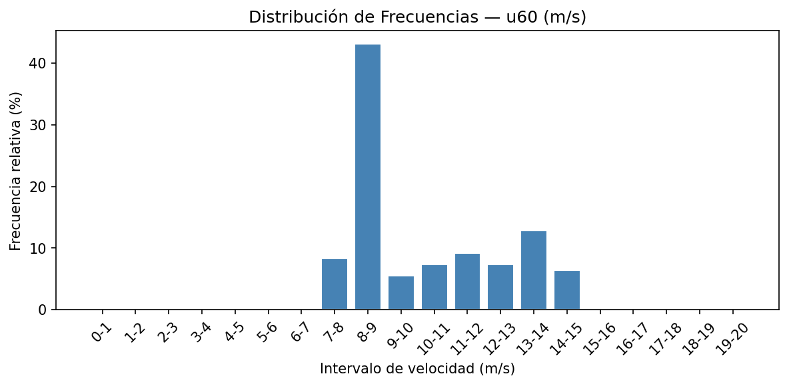
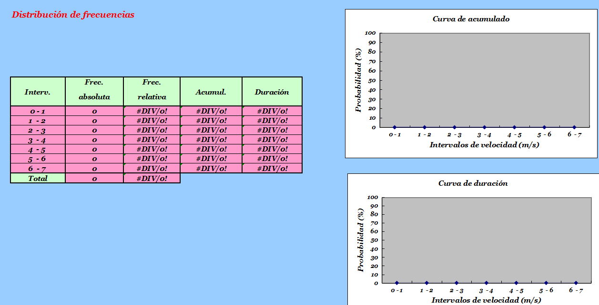
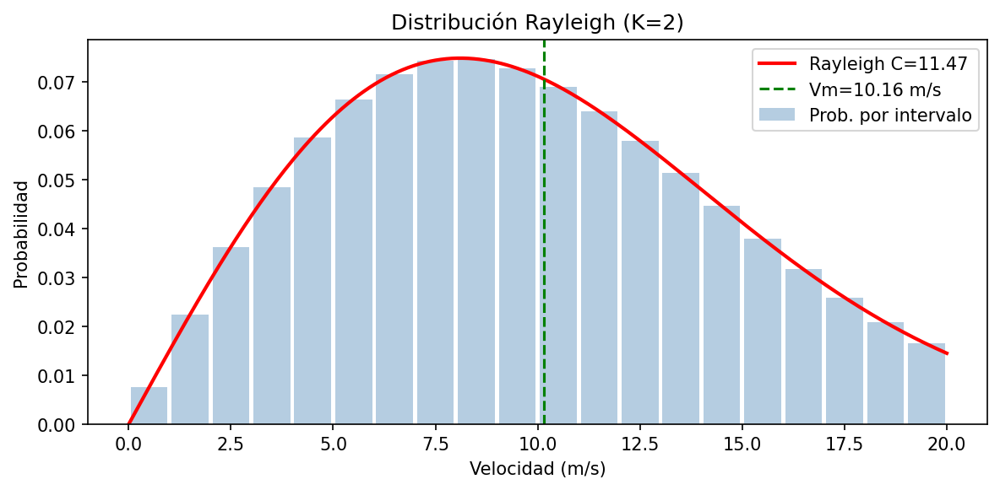
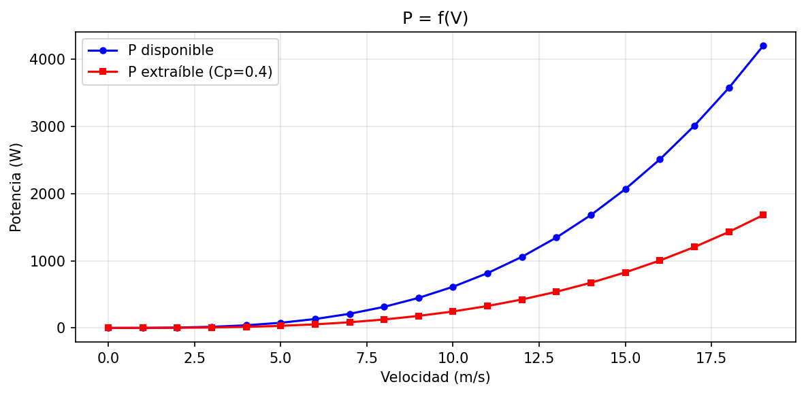
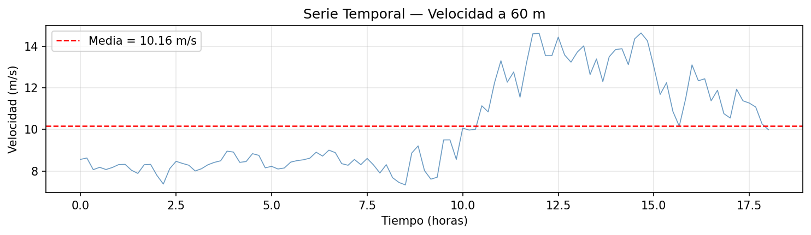

Análisis de velocidad de viento — Altura 60 m
PC 13 · Energías Renovables · UNALM 2026-I · u60 (m/s) · 109 observaciones cada 10 min
Vm = 10.16 m/s
Máx = 14.64 m/s
Mín = 7.34 m/s
σ = 2.25 m/s
C Rayleigh = 11.47 m/s
¿Qué es la distribución de tiempo?
Es una tabla que organiza TODAS las mediciones en una cuadrícula de hora × medida dentro de la hora.
Cada celda = la velocidad exacta registrada en ese instante.
Hora 0 (medianoche)
→
Medida 1: 00:00
→
Medida 2: 00:10
→
Medida 3: 00:20
→
... hasta :50
Filas = hora entera del día (0, 1, 2, ..., 18 en tus datos)
Columnas = medida 1 (min 0), medida 2 (min 10), medida 3 (min 20), medida 4 (min 30), medida 5 (min 40), medida 6 (min 50)
Tus datos van de 00:00 hasta 18:00 → 109 obs = 18 h × 6 + 1 extra
⚠️ La hora 18 solo tiene Medida 1 (9.987 m/s) y las demás son NaN porque los datos se cortaron ahí.
Resultado de tu tabla

| Hora | M1 (0') | M2 (10') | M3 (20') | M4 (30') |
|---|---|---|---|---|
| 0 | 8.563 | 8.628 | 8.068 | 8.181 |
| 10 | 10.067 | 9.970 | 10.006 | 11.136 |
| 12 | 14.617 | 13.543 | 13.544 | 14.432 |
| 18 | 9.987 | NaN | NaN | NaN |
Tabla distribución de tiempo (Excel del profesor)
¿Qué es un intervalo de velocidad?
Se divide el rango de velocidades en "cajitas" de 1 m/s cada una (0–1, 1–2, ...) y se cuenta cuántas observaciones caen en cada cajita.
Tus datos van de 7.34 a 14.64 m/s → solo los intervalos 7–8 hasta 14–15 tienen datos
Los intervalos 0–7 y 15–20 tienen frecuencia = 0 (no hubo vientos tan lentos ni tan rápidos ese día)

Histograma generado por el código Python
Las 4 columnas que calcula el código
Frec. absoluta¿Cuántas mediciones caen en ese intervalo? Ej: 47 mediciones entre 8 y 9 m/s
Frec. relativa (%)47 / 109 = 43.1% del tiempo estuvo entre 8–9 m/s
Frec. acumulada (%)Suma de todos los % anteriores. ¿Qué % del tiempo el viento estuvo POR DEBAJO de X m/s?
Duración (h)Frec. absoluta × 10 min = horas reales. Ej: 47 × (10/60) = 7.83 h
🎯 Examen: El intervalo 8–9 m/s concentra el 43.1% de las observaciones. ¿Qué implica esto para el diseño de un aerogenerador en este sitio?
Resultado de tus datos
| Intervalo | Frec. abs. | Frec. rel. % | Duración h |
|---|---|---|---|
| 7–8 | 9 | 8.26% | 1.50 |
| 8–9 | 47 | 43.12% | 7.83 |
| 9–10 | 6 | 5.50% | 1.00 |
| 10–11 | 8 | 7.34% | 1.33 |
| 11–12 | 10 | 9.17% | 1.67 |
| 12–13 | 8 | 7.34% | 1.33 |
| 13–14 | 14 | 12.84% | 2.33 |
| 14–15 | 7 | 6.42% | 1.17 |
⚠️ El intervalo dominante es 8–9 m/s con 43% del tiempo. El viento es moderado-alto y bastante constante.
¿Cómo se calcula la velocidad media?
La velocidad media es el promedio representativo del viento. El código te da dos métodos.
El profesor usa la ponderada por frecuencia relativa, más precisa porque usa los límites de los intervalos.
Método 1 — Media simple (aritmética)
Vm = (v₁ + v₂ + ... + vₙ) / n
Vm = suma de mediciones ÷ 109
Vm = 10.1612 m/s
Vm = suma de mediciones ÷ 109
Vm = 10.1612 m/s
Pandas lo hace con
.mean() directamente sobre la columnaMétodo 2 — Media ponderada (método del profe)
Vm = Σ (marca_clase × frec_relativa)
= 7.5×0.0826 + 8.5×0.4312
+ 9.5×0.0550 + 10.5×0.0734 + ...
Vm = 10.2156 m/s
= 7.5×0.0826 + 8.5×0.4312
+ 9.5×0.0550 + 10.5×0.0734 + ...
Vm = 10.2156 m/s
Usa el punto medio de cada intervalo (marca de clase) multiplicado por su peso
⚠️ La diferencia entre 10.16 y 10.22 es pequeña aquí, pero en datos más irregulares puede ser significativa. El método ponderado es el estándar en ingeniería eólica.
Marca de clase: la clave del método
La marca de clase es el punto medio de cada intervalo = (límite inferior + límite superior) / 2.
Representa a TODAS las velocidades que caen dentro de ese rango.
| Intervalo | Lím. inf. | Lím. sup. | Marca = (inf+sup)/2 | Aporte a Vm |
|---|---|---|---|---|
| 7–8 | 7 | 8 | 7.5 | 7.5 × 0.0826 = 0.620 |
| 8–9 | 8 | 9 | 8.5 | 8.5 × 0.4312 = 3.665 |
| 9–10 | 9 | 10 | 9.5 | 9.5 × 0.0550 = 0.523 |
| 13–14 | 13 | 14 | 13.5 | 13.5 × 0.1284 = 1.733 |

Tabla de frecuencias del Excel del profesor
🎯 Examen: Si la frecuencia relativa del intervalo 8–9 m/s es 43.12% y su marca de clase es 8.5 m/s, ¿cuánto aporta solo ese intervalo a la velocidad media ponderada?
Respuesta: 8.5 × 0.4312 = 3.665 m/s — el mayor aporte individual
Respuesta: 8.5 × 0.4312 = 3.665 m/s — el mayor aporte individual
¿Qué es Rayleigh?
Rayleigh es un modelo matemático (Weibull con K=2) que predice con qué probabilidad aparece cada velocidad de viento, usando solo la velocidad media como parámetro.
C = Vm / (√π / 2) = 10.1612 / 0.8862
C = 11.4657 m/s
R(V) = (2/C²) × V × exp(-(V/C)²)
C = 11.4657 m/s
R(V) = (2/C²) × V × exp(-(V/C)²)

Curva Rayleigh generada por Python
Potencia del viento
La potencia disponible en el viento crece con el cubo de la velocidad. Duplicar la velocidad multiplica la potencia por 8.
P_disp = ½ × ρ × A × V³
P_ext = Cp × P_disp
A Vm=10.16 m/s, A=1 m²:
P_disp = 642.6 W | P_ext = 257 W
P_ext = Cp × P_disp
A Vm=10.16 m/s, A=1 m²:
P_disp = 642.6 W | P_ext = 257 W
ρ = 1.225 kg/m³ (estándar — ajustar con altitud y temperatura real)
Cp = 0.40 asumido — límite de Betz = 0.593
Energía anual: 3,020 kWh/año por m² de rotor
Gráficos de potencia y energía

P = f(V) generado por Python

Serie temporal — velocidad a 60 m
Densidad real del aire
Altitud (m) y temperatura (°C) del sitio:
ρ = 353.05/T × exp(-0.034163×Z/T)
Área de rotor
Con el diámetro D del aerogenerador:
A = π × (D/2)²
Resumen integrador — todo el análisis de un vistazo
| Paso | Qué calcula | Resultado clave | Para qué sirve | Pendiente |
|---|---|---|---|---|
| 1. Dist. de tiempo | Matriz hora × medida | Hora 12 tiene vientos más fuertes (~14 m/s) | Ver patrón diurno del viento | — |
| 2. Dist. de frecuencias | Conteo por intervalos de 1 m/s | Intervalo 8–9 m/s domina con 43.1% | Entender dónde "vive" el viento | — |
| 3. Velocidad media | Promedio ponderado por frec. relativa | Vm = 10.16 m/s (simple) / 10.22 (ponderada) | Parámetro base para todo cálculo | — |
| 4. Rayleigh (K=2) | Distribución de probabilidad | C = 11.47 m/s | Predecir frecuencia de cada velocidad | — |
| 5. Potencia | P = ½ρAV³ | 642.6 W disponibles a Vm (A=1 m²) | Diseñar el aerogenerador | ρ real, área rotor |
| 6. Energía anual | Σ P×tiempo por intervalo | 3,020 kWh/año por m² de rotor | Evaluar viabilidad económica | Cp y área reales |
⚠️ Dato integrador: tus 109 observaciones son solo ~18 horas de un día. Para un análisis real se necesitan al menos un año de datos (8,760 h).
La energía anual de 3,020 kWh/año se obtuvo extrapolando la distribución Rayleigh, NO midiendo un año real.